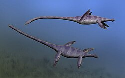

Cos'era l'Elasmosauro?
L’Elasmosaurus era un rettile marino appartenente ai plesiosauri. Non era un dinosauro, ma un animale acquatico vissuto nello stesso periodo, il Cretaceo.

L’Elasmosaurus era un rettile marino appartenente ai plesiosauri. Non era un dinosauro, ma un animale acquatico vissuto nello stesso periodo, il Cretaceo.
Era lungo fino a 14 metri, con:
Si nutriva di:
Viveva nei mari che coprivano gran parte del Nord America.